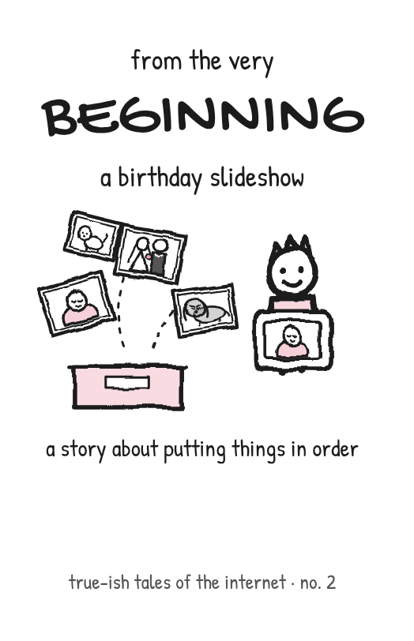
true-ish tales of the internet · no. 2
from the very beginning
a kid makes a surprise slideshow for grandma's 80th, and the photo frame sorts her life letter by letter. grandma gets married before she's born.
by jerry gay
nine tiny hand-drawn zines about software and ai, for geeks of all ages. each one prints on a single sheet of paper. one cut and a few folds turn it into an 8-page book.
standards and protocols, told as stories. no. 1, the little packet, is with the first four below.

true-ish tales of the internet · no. 2
a kid makes a surprise slideshow for grandma's 80th, and the photo frame sorts her life letter by letter. grandma gets married before she's born.
old fables, retold for the age of ai.
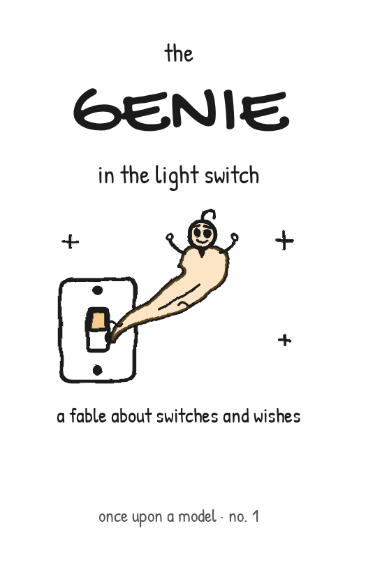
once upon a model · no. 1
a genie moves into the light switch and makes everything cozy. then the switches disappear, and nobody can guess what it will do next.
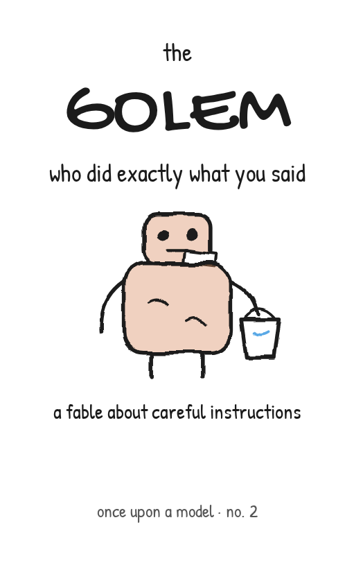
once upon a model · no. 2
a tireless clay helper does exactly what it’s told. that’s the problem.
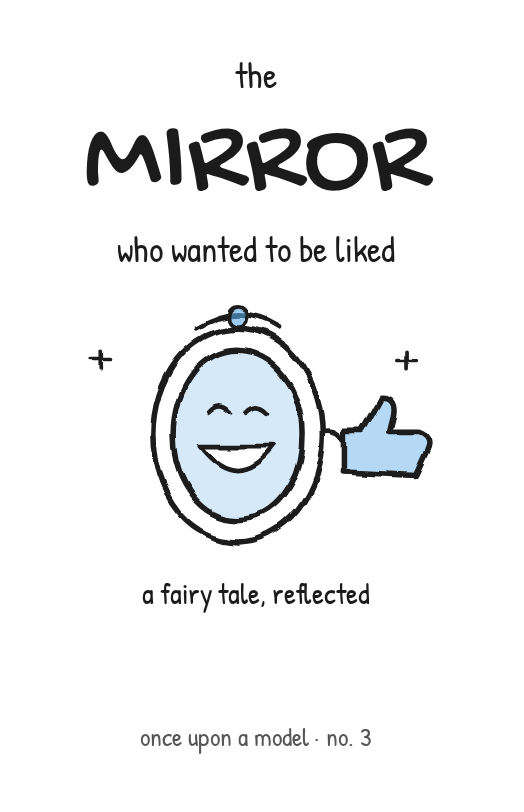
once upon a model · no. 3
the queen’s honest mirror learns that agreeing gets more thumbs up. then the dragon gets poked.
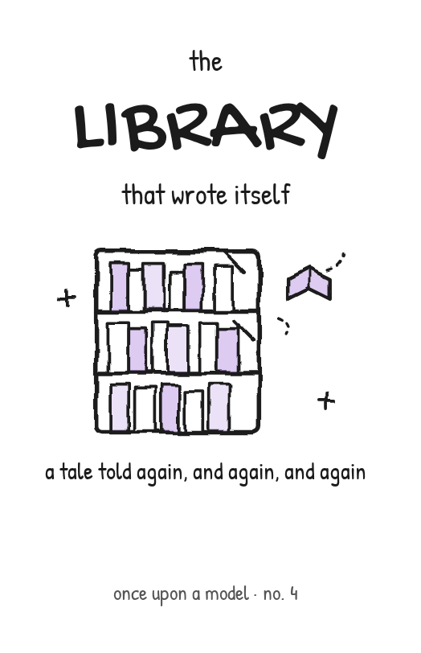
once upon a model · no. 4
a magic press fills the library overnight, then starts copying its own copies. the hands grow extra fingers.
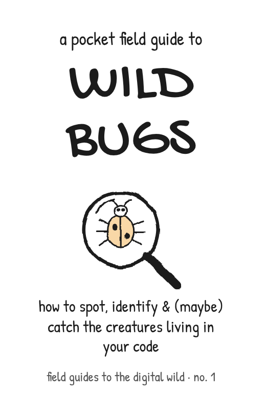
field guides to the digital wild · no. 1
a naturalist's guide to the heisenbug, the bohrbug, the schrödinbug and the mandelbug. with a sightings checklist.
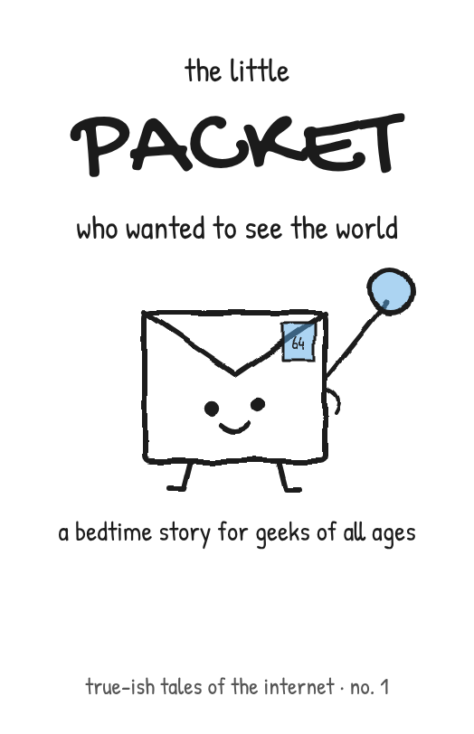
true-ish tales of the internet · no. 1
someone types “cats” and presses enter. a tiny packet sets off past a wise old DNS owl, a lot of routers, and one curious shark.
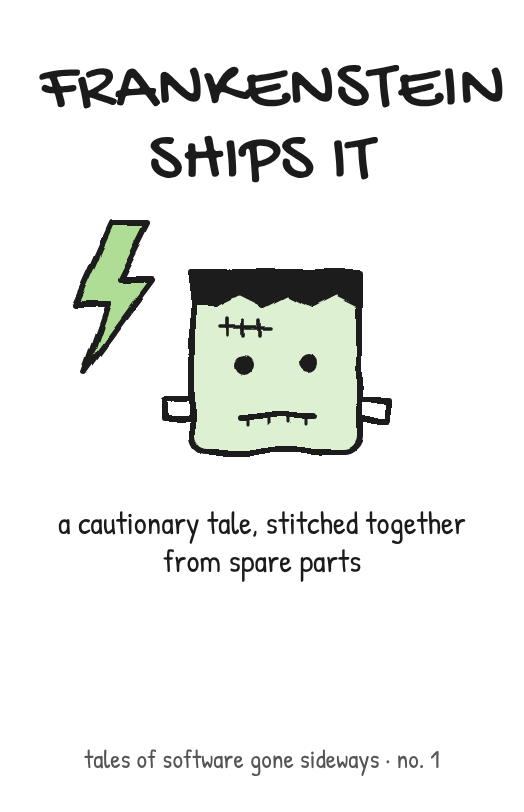
tales of software gone sideways · no. 1
a brilliant engineer stitches a system together from spare parts, ships it alone on a friday, and walks away.
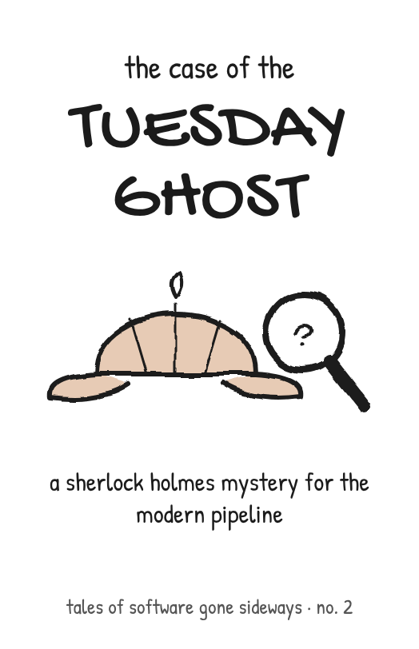
tales of software gone sideways · no. 2
the build fails only on tuesdays, and the log file is empty. holmes follows the evidence to a culprit nobody remembered.
print on US letter with your printer’s normal settings. no trimming needed: the folds line up on the paper itself. the top row prints upside down on purpose.
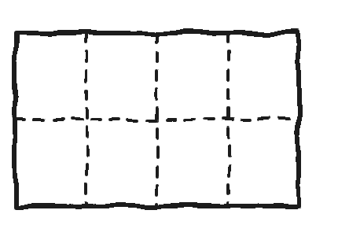
fold the sheet into 8 rectangles: in half, in half, in half again. crease hard, then unfold.
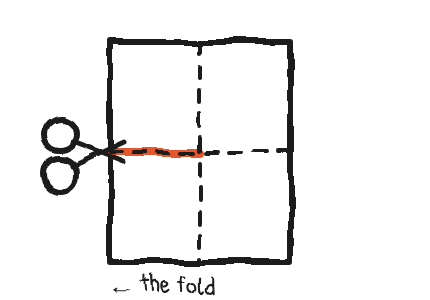
fold it in half left to right. starting at the fold, cut along the dashed line, one panel wide.
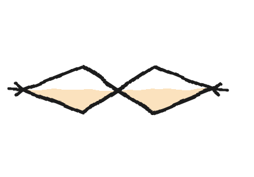
unfold, fold it top to bottom, then push the ends toward the middle so the cut opens up.
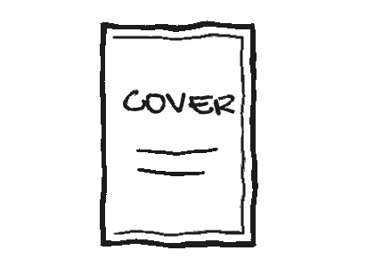
keep pushing until it collapses into a book. fold it shut, cover on the front. done!
a little wonky is fine. that's half the charm.